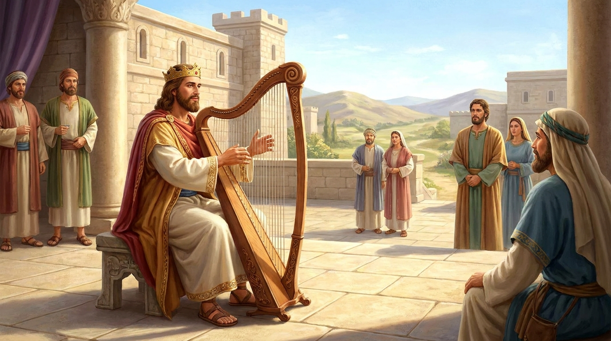

Lembrando a Herança e a Adoração
O livro de 1 Crônicas reconta a história de Israel com um propósito específico: encorajar os judeus que retornaram do exílio na Babilônia. O livro começa com longas genealogias para reconectar o povo às suas raízes, e depois foca quase inteiramente no lado positivo do reinado de Davi, destacando sua devoção a Deus, a organização do louvor e seus preparativos intensos para a construção do Templo.
Ficha Técnica
- Autor: Desconhecido (a tradição judaica atribui ao escriba Esdras)
- Tema Principal: Genealogias da nação, o reinado de Davi sob uma ótica espiritual, e a centralidade da adoração e do Templo.
- Versículo-Chave: "Cantem ao Senhor, todas as terras! Proclamem a sua salvação dia após dia! Anunciem a sua glória entre as nações, seus feitos maravilhosos entre todos os povos." (1 Crônicas 16:23-24)
Estrutura
- Genealogias: de Adão até o retorno do exílio (Caps. 1-9)
- A ascensão e o reinado vitorioso de Davi (Caps. 10-20)
- Os preparativos para a construção do Templo e o louvor (Caps. 21-29)